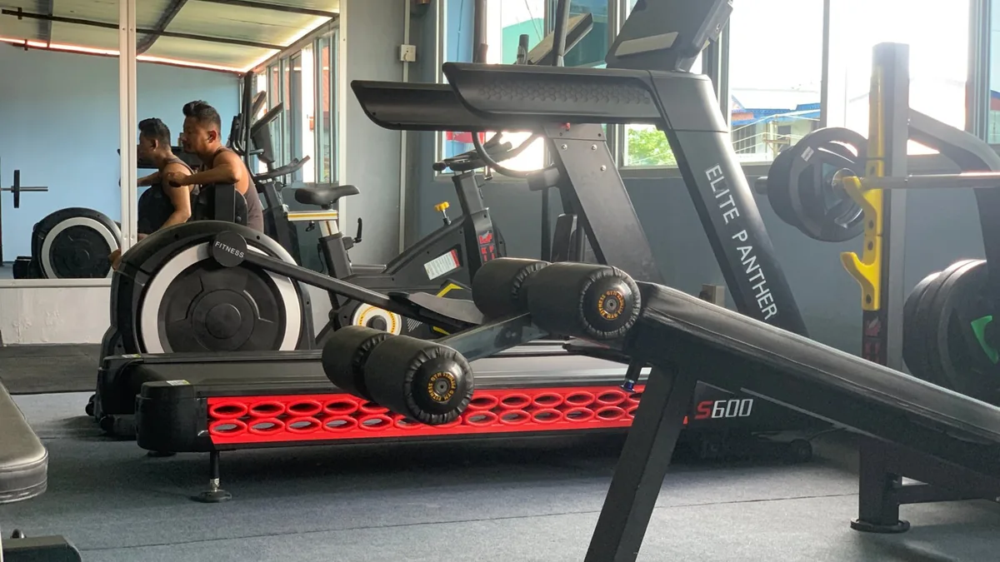
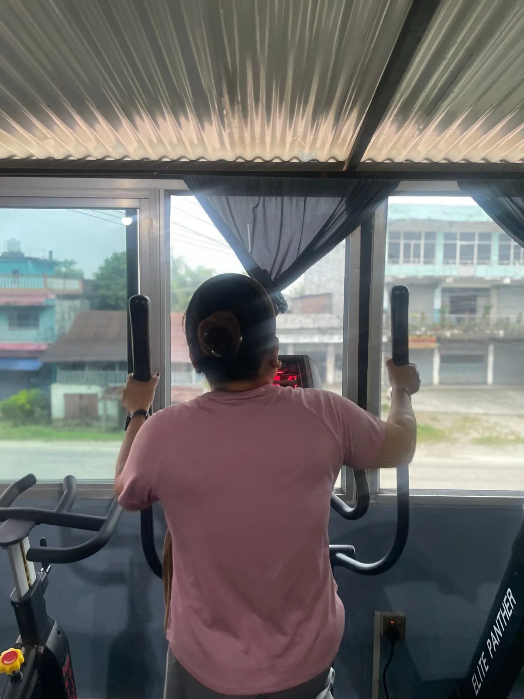

Cardio vs Weights for Fat Loss: Which Is Better?
Should you do cardio or lift weights to lose fat? How each one helps, why the best answer is both, and a simple weekly plan that fits real life.

For fat loss, the best plan uses both: weights to keep and build muscle, cardio to burn extra energy and keep your heart healthy, and a sensible diet to create the calorie deficit. If you can only choose one, strength training is usually the better long-term choice, because it changes your body shape and protects muscle while you lose fat.
What cardio does well
- Burns energy during the session. A 30 to 45 minute brisk walk, cycle or cross-trainer session adds up over a week.
- Improves heart and lung fitness. Stairs, hikes and daily life feel easier.
- Easy to start for beginners, with low injury risk when you start gently.
Downsides: your body becomes more efficient at the same cardio over time, and long cardio sessions can make some people very hungry.
What weight training does well
- Keeps muscle while you diet. Without strength training, part of the weight you lose can be muscle, which leaves you looking “skinny-fat.”
- Changes your shape. Building muscle in the right places makes you look firmer and leaner at the same weight.
- Burns energy too, both during the session and slightly afterwards during recovery.
- Strengthens bones and joints, especially important as we age.
Downsides: it takes some learning, and the scale may move more slowly at first because muscles hold more water.

Cardio machines are a great way to add easy, low-impact activity. Photo: Apex Fitness Centre, Urlabari.Head-to-head
| Cardio | Weights | |
|---|---|---|
| Calories burned during session | Higher | Moderate |
| Keeps muscle while dieting | Little | Strongly |
| Changes body shape | Some | A lot |
| Heart health | Excellent | Good |
| Beginner-friendly | Very | With guidance |
| Best for | Fitness, extra energy burn | Shape, strength, metabolism |
The real secret: food and daily movement
Neither cardio nor weights can beat a poor diet. Fat loss happens when you eat a little less energy than you use, week after week. Start with our weight loss diet plan with Nepali food.
Daily movement outside the gym, like walking, stairs and chores, also adds up to a lot. See walking for weight loss.
A simple weekly fat-loss plan
| Day | Training |
|---|---|
| Sun | Full-body weights, 45 min + 10 min easy cardio |
| Mon | 30–45 min brisk walk or cycle |
| Tue | Full-body weights, 45 min |
| Wed | Rest or light walk |
| Thu | Full-body weights, 45 min + 10 min intervals (bike or cross-trainer) |
| Fri | 45–60 min walk or hike |
| Sat | Rest |
For the weight sessions, follow our beginner gym workout plan.
Should you do cardio before or after weights?
After, if fat loss and strength are both goals. You will lift better with fresh energy. A 5 to 10 minute warm-up on a bike or treadmill before lifting is still a good idea.
What about HIIT?
High-intensity interval training (short hard bursts with rest) gives a lot of benefit in little time. It is tiring, so 1 to 2 sessions a week is enough for most people, alongside weights and walking.
Frequently asked questions
Can I lose weight with only weight training?
Yes, if your diet creates a calorie deficit. Adding some cardio or daily walking usually makes it easier.
How much cardio should I do to lose fat?
Many people do well with 2 to 4 sessions of 20 to 45 minutes a week, plus daily walking. More is not always better if it makes you overly hungry or tired.
Will lifting weights make me bulky while losing weight?
No. In a calorie deficit, it is very hard to gain much muscle size. Weights help you keep muscle and look firmer.
Is the treadmill or cross-trainer better?
Both are good. Choose the one you enjoy and can do consistently. The cross-trainer is gentler on the knees.
Sources
- Effects of aerobic and/or resistance training on body mass and fat mass in overweight or obese adults (Willis et al., Journal of Applied Physiology, 2012)
- WHO fact sheet: physical activity (World Health Organization)
Photo: cardio area at Apex Fitness Centre, Urlabari.
General information, not medical advice. Ask a doctor if you have a health condition. Results vary from person to person.
Comments
Loading comments…